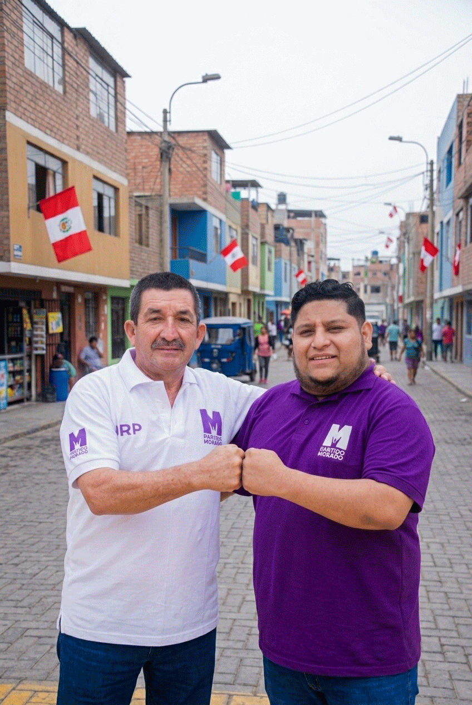
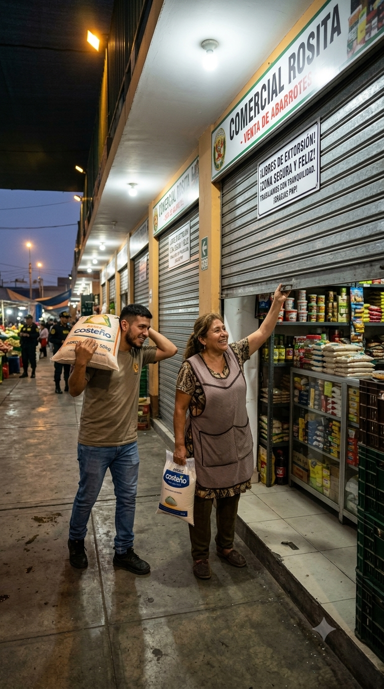
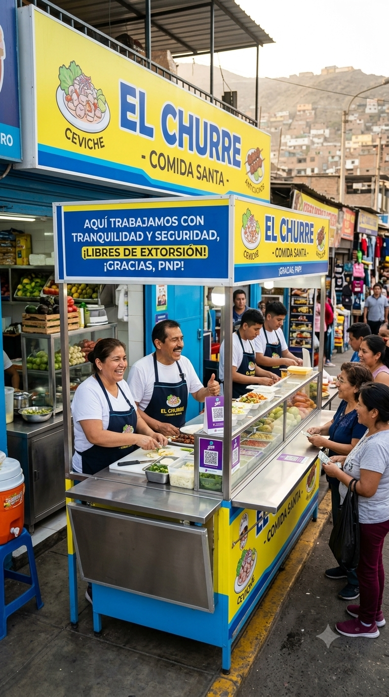

Tu calle
Ese hueco que esquivas todos los días no necesita una obra millonaria. Necesita que alguien lo repare a tiempo. Vamos a tener un equipo municipal propio para eso.
En San Martín de Porres vives con miedo. Vamos a cambiar eso.
Los que hundieron el distrito en el caos y la delincuencia quieren volver. Nosotros venimos con un plan, no con excusas.
Este 4 de octubre, el miedo cambia de bando. Marca la M.
No prometemos salir a repartir golpes. Prometemos algo que funciona: tecnología, sistema de inteligencia y gente que conoce la calle.
Luis es ingeniero. Ulises tiene 20 años en la DIRINCRI. Inteligencia y firmeza, juntas.
Si estás harto de vivir encerrado en tu propia casa, pásale esto a alguien más.
FOTO DE PRUEBAEn este distrito hay gente que paga cupo antes de vender su primer producto. Ningún otro candidato lo nombra. Nosotros sí.
El cupo es el impuesto que cobra la mafia. Y se acabó.
Si conoces a alguien que paga cupo para poder trabajar, esto es por él.El miedo no solo te quita tranquilidad. Te quita plata. Y nadie te lo dice.
La inseguridad es un impuesto invisible que le cobran a tu patrimonio. Nosotros lo vamos a eliminar.
Tu casa vale menos por culpa de ellos. Que tu vecino también lo sepa.¿Por qué en SMP no hay empleo formal? La respuesta no es la que te dijeron.
Cuando el miedo cambie de bando, la inversión vuelve. Y con ella, el trabajo.
El 4 de octubre lo traemos de vuelta. Muéstrales a tus vecinos cómo.
FOTO DE PRUEBALlevas años trabajando con el miedo de que un día lleguen y te quiten todo. Eso se acaba.
Tú no eres el problema del distrito. Eres el que lo mantiene de pie desde las cuatro de la mañana.
Alguien de tu familia se levanta a las cuatro para abrir su puesto. Esto es por ella.Luis Alberto Flores Roldán. Ingeniero. Candidato a alcalde de San Martín de Porres.
Luis creció en Apurímac, viendo de cerca el esfuerzo diario de las familias del campo. Ahí aprendió que las cosas se consiguen trabajando, con honestidad y perseverancia — los mismos valores que hoy quiere llevar a la gestión municipal.
En menos de un mes, en la esquina de su propia cuadra, se produjeron dos asesinatos a tiros que pusieron en peligro a vecinos, comerciantes y emprendedores. Las mismas calles donde jugaba de niño hoy se tiñen de sangre. Por eso no habla de la inseguridad desde una tarima — la vive todos los días, en su propia calle.
Es ingeniero de Sistemas Computacionales, con más de 14 años trabajando en proyectos de tecnología e innovación, en instituciones tanto públicas como privadas.
Esta es su primera candidatura a un cargo de elección popular. No llega por ambición de poder — llega convencido de que San Martín de Porres puede tener algo distinto a lo que ha tenido siempre.
Nunca hemos gobernado este distrito. Te traemos lo que nunca te entregaron: un plan pensado para los vecinos.
Muchos años nos gobernaron los mismos sin resultados. Esta vez va a ser distinto — pero contigo adentro.Porque un distrito no es solo seguridad. Es la vereda por la que caminas, el paradero donde esperas, la calle por la que tu hijo va al colegio.
Ese hueco que esquivas todos los días no necesita una obra millonaria. Necesita que alguien lo repare a tiempo. Vamos a tener un equipo municipal propio para eso.
Todos en el barrio sabemos cuál es. Vamos a publicar el mapa de los cruces donde la gente muere atropellada, y a arreglarlos uno por uno.
Es el único que entra a tu calle cuando no hay nada más. Padrón, cursos y rutas claras: ganarse la vida manejando no puede ser un delito.
La Vía Expresa Norte y el Anillo Vial van a mover todo el distrito. Alguien tiene que estar ahí defendiendo que no te perjudiquen a ti.
Tamizaje, seguimiento nutricional y educación alimentaria junto con los comedores y el Vaso de Leche de tu zona. Porque un niño con anemia tendrá una desventaja toda la vida.
Brigadas móviles y campañas barriales de salud.
Programa de inserción laboral y capacitación técnica con empresas e institutos. Vamos a darles una puerta.
Vamos a rehabilitar 50 losas deportivas del distrito. Un chico jugando pelota es un chico que no está en la esquina.
Orientación legal y psicológica, promotoras en el barrio y derivación rápida al CEM y la policía. Que nadie tenga que aguantar porque no sabe adónde ir.
Emergencias 24 horas en la clínica veterinaria. Campañas de vacunación y desparasitación gratuitas todo el año. Exoneración de tasas y acceso a la clínica para las asociaciones que rescatan animales.
Un Centro de Empleo de verdad, capacitación técnica y ferias de trabajo que lleguen a tu zona. No un tablón de avisos que nadie mira.
Digitalización y sistema anticorrupción. Cuando el trámite es digital, nadie te puede pedir "algo" para agilizarlo.
Vamos a publicar en qué se gasta cada sol del municipio. Tú lo pagas, tú tienes derecho a saberlo.
Hospital Municipal, Centro Cultural, Complejo Deportivo: vamos a dejar los estudios listos y la primera etapa iniciada. No te vamos a prometer que los inauguramos: te vamos a prometer que arrancan.
Esto no lo escribimos para conseguir tu voto. Lo escribimos porque vamos a cumplirlo.
Lee el plan completo. Decide con información.